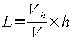
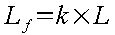
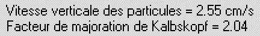
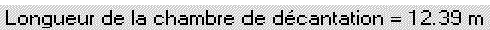
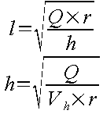
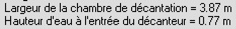

Manuel utilisateur : Les Bassins de dessablement ou décantation
Ce module permet de dimensionner un bassin de décantation.
L'exemple de calcul de dimensionnement d'un bassin de décantation qui suit correspond à l'exemple « Démo Décantation ».
Pour l'ouvrir, il faut cliquer sur ouvrir dans le menu « Bassin de décantation »,
ensuite sélectionner « Démo Décantation » dans la fenêtre qui vient d'apparaître
et bien sûr cliquer sur le bouton « OK » pour valider votre choix.
Il faut renseigner Hydrouti sur un minimum de valeurs caractéristiques du problème à résoudre. Les valeurs prises en compte pour notre exemple sont présentées sur la figure qui suit :
Débit à décanter :
Il faut saisir le débit arrivant dans le bassin en m3/s.
Taille des particules à décanter :
Il est nécessaire de caractériser les particules transportées par l'effluent, afin de connaître leur vitesse de chute. Toutes les particules d'un diamètre supérieur à celui saisi seront piégées dans le bassin.
Rapport l/h :
Ce rapport, qu'on note r, va permettre de déterminer la largeur l et la hauteur d'eau h à l'entrée du bassin.
Pourcentage de sédimentation :
Il représente le pourcentage de particules théoriquement piégées par le bassin.
Vitesse horizontale des particules :
L'utilisateur doit également fixer la vitesse horizontale des particules dans le bassin.
Pour qu'une particule ayant une vitesse de chute V (déterminée à partir du diamètre des particules à sédimenter), prise dans un fluide animé d'une vitesse constante horizontale Vh et située à une hauteur h à l'entrée du bassin, puisse se déposer, il faut que la longueur L soit telle que :

En raison des approximations du modèle, on corrige cette va-leur en la multipliant par le facteur de majoration de Kalbskopf :

Le facteur de Kalbskopf dépend du pourcentage de sédimentation et de la taille des particules à décanter :
|
Granulométrie d (en mm) |
100% |
90% |
85% |
|
0.125 |
5.06 |
3.28 |
2.75 |
|
0.160 |
4.67 |
3.07 |
2.40 |
|
0.200 |
4.12 |
2.43 |
1.92 |
|
0.250 |
3.45 |
2.04 |
1.59 |
|
0.315 |
2.84 |
1.75 |
1.48 |
Dans le cas présent, nous obtenons une vitesse de chute de 2.55 cm/s et un facteur de Kalbskopf égal à 2.04.

Nous en déduisons donc la longueur définitive du bassin :

Connaissant, le rapport l sur h, le débit et la vitesse horizon-tale, on en déduit facilement la largeur l du bassin et la hauteur d'eau h à l'entrée du bassin :

Pour notre exemple, nous obtenons une largeur de 3.87 m et une hauteur d'eau h égale à 0.77 m :
